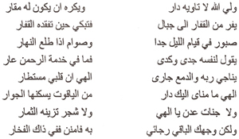
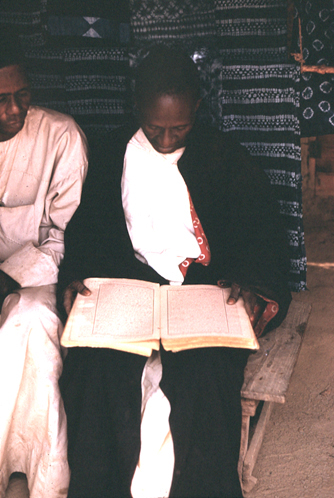

3. The Social, Linguistic, and Literary Background
Social and literary background. The linguistic basis—the example of Bantu. Some literary tools. Presentation of the material. The literary complexity of African cultures.
I
In Africa, as elsewhere, literature is practised in a society. It is obvious that any analysis of African literature must take account of the social and historical context—and never more so than in the case of oral literature. Some aspects of this are discussed in the following chapter on poetry and patronage and in examples in later sections. Clearly a full examination of any one African literature would have to include a detailed discussion of the particularities of that single literature and historical period, and the same in turn for each other instance—a task which cannot be attempted here. Nevertheless, in view of the many prevalent myths about Africa it is worth making some general points in introduction and thus anticipating some of the more glaring over-simplifications about African society.
A common nineteenth-century notion that still has currency today is the idea of Africa as the same in culture in all parts of the continent (or at least that part south of the Sahara); as non-literate, primitive, and pagan; and as unchanging in time throughout the centuries. Thus ‘traditional’ Africa is seen as both uniform and static, and this view still colours much of the writing about Africa.
Such a notion is, however, no longer tenable. In the late nineteenth or earlier twentieth centuries (the period from which a number of the instances here are drawn) the culture and social forms of African societies were far from uniform. They ranged—and to some extent still do—from the small hunting bands of the Bushmen of the Kalahari desert, to the proud and independent pastoral peoples of parts of the Southern Sudan and East Africa, or the elaborate and varied kingdoms found in many parts of the continent, above all in western Africa and round the Great Lakes in the east. Such kingdoms provided a context in which court poetry and court poets could nourish, and also in some cases a well-established familiarity with Arabic literacy. Again, in the economic field, almost every gradation can be found from the near self-sufficient life of some of the hunting or pastoral peoples to the engagement in far-reaching external trade based on specialization, elaborate markets, and a type of international currency, typical of much of West Africa and the Arab coast of East Africa. The degree of specialization corresponding to these various forms has direct relevance to the position of native composers and performers of oral literature—in some cases leading to the possibility of expert and even professional poets, and of a relatively leisured and sometimes urban class to patronize them. In religion again, there are many different ‘traditional’ forms: the older naive pictures of Africa as uniformly given up to idol-worshipping, fetishes, or totemism are now recognized as totally inadequate. We find areas (like the northerly parts of the Sudan region and the East Coast) where Islam has a centuries-long history; the elaborate pantheons of West African deities with specialized cults and priests to match; the interest in ‘Spirit’ issuing in a special form of monotheism among some of the Nilotic peoples; the blend between belief in the remote position of a far off ‘High God’ and the close power of the dead ancestors in many Bantu areas—and so on. This too may influence the practice of oral art, sometimes providing the context and occasion for particular forms, sometimes the need for expert religious performers.
In some areas we also find a long tradition of Arabic literacy and learning. The east coast and the Sudanic areas of West Africa have seen many centuries of Koranic scholarship and of specialist Arabic scribes and writers using the written word as a tool for correspondence, religion, and literature. To an extent only now being fully realized, these men were responsible for huge numbers of Arabic manuscripts in the form of religious treatises, historical chronicles, and poetry.1 In fact, even for earlier centuries a nineteenth-century writer on Arabic literature in the Sudan region as a whole can sum up his work:
On peut conclure que, pendant les XIVe, XVe et XVIe siècles, la civilisation et les sciences florissaient au même degré sur presque tous les points du continent que nous étudions; qu’il n’existe peut-être pas une ville, pas une oasis, qu’elles n’aient marquée de leur empreinte ineffaçable, et surtout, que la race noire n’est pas fatalement réleguée au dernier échelon de l’espèce humaine
(Cherbonneau 1856: 42)
Not only was Arabic itself a vehicle of communication and literature, but many African languages in these areas came to adopt a written form using the Arabic script. Thus in the east we have a long tradition of literacy in Swahili and in the west in Hausa, Fulani, Mandingo, Kanuri, and Songhai. With the exception of Swahili,2 the native written literature in these languages has not been very much studied,3 but it seems to be extensive and to include historical and political writings in prose, theological treatises, and long religious and sometimes historical poems. The literary models tend to be those of Arabic literature, and at times paraphrase or even translation seem to have been involved. In other cases local literary traditions have been built up, like the well-established Swahili literature, less directly indebted to Arabic originals but still generally influenced by them in the form and subject-matter of their writings.
In stressing the long literate tradition in certain parts of Africa, we must also remember that this was the preserve of the specialist few and that the vast majority even of those peoples whose languages adopted the Arabic script had no direct access to the written word. In so far as the writings of the scholars reached them at all, it could only be by oral transmission. Swahili religious poems were publicly intoned for the enlightenment of the masses (Harries 1962: 24), Fulani poems declaimed aloud (Lacroix i, 1965: 25), and Hausa compositions like ‘the song of Bagaudu’ (Hiskett 1954: 550) memorised in oral form. The situation was totally unlike the kind of mass literacy accompanied by the printing press with which we are more familiar.

Figure 8. Arabic script of a nineteenth-century poem in Somali (from B. W. Andrzejewski ‘Arabic influence in Somali poetry’ in Finnegan et al 2011).
Besides Arabic forms, there are a few other instances of literate traditions in Africa. These include the now obsolete tifinagh script of the Berber peoples of North Africa, among them the Tuareg of the Sahara. Here the written form was probably little used for literary composition, but its existence gave rise to a small lettered class and the interplay between written and oral traditions. Most often it was the women, staying at home while the men travelled, who composed the outstanding panegyric, hortatory, and love poetry of this area.4 More important is the long written tradition of Ethiopia. This is the literature of a complex and ancient civilization whose association with Christianity probably dates back to about the fourth century. Though probably never in general use, writing was used from an early period. It occurs particularly in a Christian context, so that the history of Ethiopic written literature coincides pretty closely with Christian literature, much of it based on translation. There are chronicles (generally taking the Creation of the World as their starting-point), lives of the saints, and liturgical verse. In addition there are royal chronicles which narrate the great deeds of various kings.5 The few other minor instances of indigenous scripts for local languages, such as Vai, are of little or no significance for literature and need not be considered here.
The common picture, then, which envisages all sub-Saharan Africa as totally without letters until the coming of the ‘white man’ is misleading. Above all it ignores the vast spread of Islamic and thus Arabic influences over many areas of Africa, profoundly affecting the culture, religion, and literature. It must be repeated, however, that these written traditions were specialist ones unaccompanied by anything approaching mass literacy. The resulting picture is sometimes of a split between learned (or written) and popular (or oral) literature. But in many other cases we find a peculiarly close interaction between oral and written forms. A poem first composed and written down, for instance, may pass into the oral tradition and be transmitted by word of mouth, parallel to the written form; oral compositions, on the other hand, are sometimes preserved by being written down. In short, the border-line between oral and written in these areas is often by no means clear-cut.

Figure 9. Reading the Bible in up-country Sierra Leone, 1964 (photo David Murray).
The earlier belief that Africa had no history was due to ignorance. Africa is no exception to the crowded sequence of historical events, even though it is only recently that professional historians have turned their attention to this field. The early impact and continuing spread of Islam, the rise and fall of empires and kingdoms throughout the centuries, diplomatic or economic contacts and contracts within and outside Africa, movement and communication between different peoples, economic and social changes, wars, rebellions, conquests, these are all the stuff of history. No doubt too there have been in the past, as in the present, rising and falling literary fashions, some short-lived, others long-lasting; some drawing their inspiration from foreign sources, others developing from existing local forms. Examples in this volume may give a rather static impression, as if certain ‘traditional’ forms have always been the same throughout the ages; but such an impression is misleading and arises more from lack of evidence than from any necessary immobility in African oral art. Unfortunately there are few if any African societies whose oral literature has been thoroughly studied and recorded even at one period of time, let alone at several periods.6 But with increasing interest in oral art it may be hoped that enough research will be undertaken to make it feasible, one day, to write detailed literary and intellectual histories of particular cultures.
A further consequence of the facile assumptions about lack of change in Africa until very recently is to lead one to exaggerate the importance of these more recent changes. To one who thinks African society has remained static for, perhaps, thousands of years, recently induced changes must appear revolutionary and upsetting in the extreme. In fact, recent events, important as they are, can be better seen in perspective as merely one phase in a whole series of historical developments. As far as oral literature and communication are concerned, the changes over the last fifty or hundred years are not so radical as they sometimes appear. It is true that these years have seen the imposition and then withdrawal of colonial rule, of new forms of administration and industry, new groups of men in power, and the introduction and spread of Western education accompanied by increasing reliance written forms of communication. But the impact of all this on literature can be over-emphasized. For one thing, neither schools nor industrial development have been evenly spread over the area and many regions have little of either. There is nowhere anything approaching mass literacy. Indeed it has been estimated that some like eight out of ten adults still cannot read or write7 and where mass primary education is the rule it will still take years to eradicate adult illiteracy. Bare literacy, furthermore, in what is often a foreign language (e.g. English or French) may not at all mean that school leavers will turn readily to writing as a form of communication, far less as a vehicle of literary expression. Literacy, a paid job, even an urban setting need not necessarily involve repudiation of oral forms for descriptive or aesthetic communication.
There is a tendency to think of two distinct and incompatible types of society (traditional’ and ‘modern’, for instance), and assume that the individual must pass from one to the other by a sort of revolutionary leap. But individuals do not necessarily feel torn between two separate worlds; they exploit the situations in which they find themselves as best they can. There is indeed nothing to be surprised at in a continuing reliance on oral forms. Similarly there is nothing incongruous. in a story being orally narrated about, say, struggling for political office or winning the football pools, or in candidates in a modern election campaign using songs to stir up and inform mass audiences which have no easy access to written propaganda. Again, a traditional migration legend can perfectly well be seized upon and effectively exploited by nationalist elements for their own purposes to bring a sense of political unity among a disorganized population, as in Gabon in the late 1950s.8 University lecturers seek to further their own standing by hiring praise singers and drummers to attend the parties given for their colleagues to panegyricize orally the virtues of hosts and guests.
Such activities may appear odd to certain outside observers—as if having ‘modern’ competence in one sphere must necessarily involve an approximation to Western cultural modes in others. But the complexity of the facts contradicts this view, which in part still derives from nineteenth-century ideas about evolutionary stages. In fact, many different forms of literature are possible and exist, and if most of the examples in this volume appear to deserve the term ‘traditional’, this is perhaps more a function of the outlook and interests of previous collectors than an indication that certain forms of oral art cannot coexist with some degree of literacy.9
One of the main points of this section is to emphasize that the African world is not totally different from that of better-known cultures. It is true that much remains to be studied, that the special significance of the oral aspect must be grasped, and that one of the difficulties of appreciating African literature arises from the unfamiliarity of much of its content or context. But—and this is the crucial point—the unfamiliarities are on the whole those of detail, not of principle. Far from being something totally mysterious or blindly subject to some strange force of ‘tradition’, oral literature in fact bears the same kind of relation to its social background as does written literature. In each case it is necessary to study in detail the variations bound up with differing cultures or historical periods, and to see the significance of these for the full appreciation of their related literary forms. In neither case are these studies necessarily easy. But it is a disservice to the analysis of comparative literature to suggest that questions about African oral literature are either totally simple (answered merely by some such term as ‘tribal mentality’ or ‘tradition’) or so unfamiliar and mysterious that the normal problems in the sociology of literature cannot be pursued.
II
African literature, like any other, rests on the basis of language. Something must now therefore be said about this. Though a full account could only be given by a linguist and this description only tries to convey a few points and illustrations, the topic is so important for the appreciation of African oral literature that some treatment must be attempted here.
Linguistically Africa is one of the complex areas in the world. The exact number of languages to be found is a matter of dispute, but the most often cited figure is 800, if anything an underestimate (Greenberg 1962, 1963). These, let it be stressed, are languages in the full sense of the term and not mere ‘dialects’. They can, however, be grouped together into larger language families. The exact composition and relationships of these are, again, a matter of controversy, but the overall picture is clear. The best-known group is that made up of the Bantu languages (these include such languages as Zulu, Swahili, and Luba), which extend over a vast area, practically all of south and central Africa. In the opinion of some recent scholars, even this large Bantu group is only one sub-division within a much larger family, the ‘Niger-Congo’ group, which also includes most of the languages of West Africa.10 Another vast family is the Afro-Asiatic (also called Hamito-Semitic), a huge language group which not only includes Arabic but also, in the form of one language or another, covers most of North Africa, the Horn of East Africa (including Ethiopia), and an extensive area near Lake Chad (where it includes the well-known and widely spoken example of Hausa). The Central Saharan and Macrosudanic families are two further groupings, the former covering a large but mostly sparsely inhabited region north and east of Lake Chad (including Kanuri), the latter various Sudanic languages around the Nile-Congo divide and eastwards in the Nilotic and Great Lakes region of East Africa.11 Finally there is the Click (or Khoisan) family covering the Bushman and Hottentot languages which, in the south-west of Africa, form a separate island in an area otherwise dominated by Bantu.12 Besides these indigenous languages we should also mention the more recently arrived language of Arabic and, more recently still, European languages like English, French, or Afrikaans.
In spite of the differentiation into separate language families, there are nevertheless certain distinctive features which the indigenous languages tend to have in common. These, Greenberg writes,
result from later contacts among the languages of the continent, on a vast scale and over a long period. Practically none of the peculiarities listed … as typical are shared by all African languages, and almost every one is found somewhere outside of Africa, but the combination of these features gives a definite enough characterization that a language, not labelled as such for an observer, would probably be recognized as African
(Greenberg 1962: 22)
Some of the detailed characteristics in the realm of phonetics or semantics are not worth lingering over in the present context, but the significance of tone must be mentioned. Outside the Afro-Asiatic family, tone (pitch) as an element in the structure of the language is almost universal in Africa and is particularly striking in several of the West African languages. Even some of the Afro-Asiatic languages (in the Chad sub-group) seem to have developed tonal systems through the influence of neighbouring languages. Complex noun-classifications are also widespread though not universal. The best-known instance of this is the system of classes, characterized by prefixes, into which all nouns are divided in the Bantu languages; but similar morphological forms are also to be found elsewhere. Series of derivations built up on the verb are also common and express such concepts as causative, reciprocal, reflexive, passive, or applicative. As will be seen later, all these features have direct relevance for the student of oral literature (Lestrade 1937: 304).
Contrary to earlier views based on either ignorance or speculation about the supposed primitive nature of non-literate language, it is now clear that African languages are neither simple in structure nor deficient in vocabulary. They can, indeed, be exceedingly complex. Some, for instance, make complicated and subtle use of varying tones to express different lexical and grammatical forms. Others have a system of affixes which have been compared in scope to those of Russian, Hungarian, or ancient Greek (Andrzejewski 1965: 96). In these and many other ways each language has its own genius, its own individual resources of structure and vocabulary on which the native speaker can draw for both everyday communication and literary expression.
A full appreciation of these points can naturally only be gained through a detailed study and knowledge of a particular language and its various forms of expression. But a general discussion of the single example of the Bantu group of languages may serve to illustrate better than mere assertion the kinds of factors that can be involved in the constant interplay in any African language between its linguistic and literary features.
The literary resources of the Bantu languages have been vividly described by Doke. He writes:
Great literary languages have a heritage of oral tradition which has influenced the form of the earliest literary efforts: in many cases this early heritage has had to a great extent to be deduced; but we are in the fortunate position of being able to observe the Bantu languages at a stage in which their literature is still, in the vast majority of cases, entirely oral …
(Doke 1948: 284)13
The linguistic basis from which Bantu oral literature has developed and on which further written forms may be built emerges clearly from his description.
In the first place, the literary potentialities of these languages include their large and ‘remarkably rich’ vocabularies. Languages like Zulu or Xhosa, for instance, are known to have a vocabulary of over 30,000 words (excluding all automatic derivatives), the standard Southern Sotho dictionary (20,000 words) is definitely not exhaustive, and Laman’s great Kongo dictionary gives 50,000–60,000 entries. A large percentage of this vocabulary, furthermore, is employed in daily use by the ‘common people’ (Doke 1948: 285). While they naturally did not include traditional terms for objects and ideas outside indigenous cultural forms, Bantu languages have, both earlier and more recently, shown themselves peculiarly adaptable, in assimilating foreign terms; and in the range of ‘the fields of experience with which Bantu thought is familiar, the extent of Bantu vocabulary tends to be rather larger than that of the average European language’ (Lestrade 1937: 303–4).
Vocabulary, however, is not just a matter of the number of words. It also concerns the way in which they are used. In this respect, the picturesque and imaginative forms of expression of many Bantu languages are particularly noticeable. These are often applied to even the commonest actions, objects, and descriptions. The highly figurative quality of Bantu speech comes out in some of these terms—molalatladi, the rainbow, is literally ‘the sleeping-place of the lightning’; mojalefa, the son and heir of a household, is ‘the eater of the inheritance’; bohlaba-tsatsi, the east, is ‘where the sun pierces’ (Lestrade 1937: 304). This also comes out in compound nouns. In Kongo, for instance, we have kikolwa-malavu, a drunken person (lit. ‘being stiff with wine’), or kilangula-nsangu, a slanderer (lit. ‘uprooting reputations’), and in Bemba icikata-nsoka, a courageous person (lit. ‘handling a snake’), and umuleka-ciwa, ricochet (lit. ‘the devil aims it’) (Knappert 1965: 221, 223–4). Besides the praise forms mentioned later, figurative expression is also commonly used to convey abstract ideas in a vivid and imaginative way. The idea of ‘conservatism’, for instance, is expressed in Zulu by a phrase meaning literally ‘to eat with an old-fashioned spoon’, ‘dissimulation’ by ‘he spoke with two mouths’, while in Southern Sotho idiom, the idea of ‘bribery’ is conveyed by ‘the hand in the cloak’ (Lestrade 1937: 304)
The flexible way in which this vocabulary can be deployed can only be explained with some reference to the characteristics of Bantu morphology. One of the most striking features of its structure is the wealth of derivative forms which it is possible to build up on a few roots through the use of affixes, agglutination, and at times internal vowel changes. By means of these derivatives it is feasible to express the finest distinctions and most delicate shades of meaning.
The verb system in particular is extraordinarily elaborate. There are of course the normal forms of conjugation of the type we might expect—though these forms are complex enough and exhibit a great variety of moods, implications, aspects, and tenses. Zulu, for instance, has, apart from imperative and infinitive forms, five moods, three implications (simple, progressive, and exclusive), three aspects, and a large number of tenses built up both on verbal roots and through a system of deficient verbs forming compound tenses (Doke 1948: 292–3). But in addition there is also a wealth of derivative verbal forms which provide an even more fertile source on which the speaker can draw. There is an almost endless variety of possibilities in this respect, with full scope for ad hoc formation according to the speaker’s need or mood, so that stereotyped monotony is easily avoided.
The extent of these derivative verbal forms can be illustrated from the case of Lamba, a Bantu language from Central Africa. For this one language, Doke lists seventeen different formations of the verb, each expressing a different aspect. These comprise:
A few other forms occur sporadically:
Lamba is perhaps particularly rich in these verbal derivatives, but similar formations could be cited for each of the Bantu languages. In the rather different case of Mongo, for instance, Hulstaert lists eighty different forms of the verb in his table of verbal ‘conjugation’, each with its characteristic format and meaning (Hulstaert 1965: table at end of vol., also chs 5–6). Madan sums up the ‘extraordinary richness’ of the Bantu verb when he writes:
Any verb stem … can as a rule be made the base of some twenty or thirty others, all reflecting the root idea in various lights, sometimes curiously limited by usage to a particular aspect and limited significance, mostly quite free and unrestrained in growth, and each again bearing the whole luxuriant super-growth of voices, moods, tenses, and person-forms, to the utmost limits of its powers of logical extension
(Madan 1911: 53).
In this way, then, a constant and fertile resource was at hand on which composers could draw according to their wishes and skill.
A second subtle linguistic instrument is provided by the system of nouns and noun-formation. The basic structure is built up on a kind of grammatical class-gender, with concordial agreement. In Bantu languages, that is, there are a number of different classes, varying from twelve or thirteen to as many as twenty-two (in Luganda), into one or other of which all nouns fall. Each class has a typical prefix which, in one or another form, is repeated throughout the sentence in which the noun occurs (concordial agreement). A simple example will make this clear. The Zulu term for horses, amahhashi, is characterized by the prefix ama- which must reappear in various fixed forms (a-, ama-) in the relevant phrase. Thus ‘his big horses ran away’ must be expressed as ‘horses they-his they-big they-ran-away’ (amahhashi akhe amakhulu abalekile (Doke 1948: 289). The precision of reference achieved through this grammatical form dispels the vagueness and ambiguity sometimes inherent in equivalent English forms, and at the same time provides possibilities—which are exploited—for alliteration and balance in literary formulations.
Each of these noun classes tends to cover one main type of referent, though there are variations between different languages. In general terms we can say that names of people tend to predominate in classes 1 and 2, names of trees in classes 3 and 4, names of animals in classes 9 and 10 abstract terms in class 14, verb infinitives in class 15, and locatives in classes 16, 17, and 18 (Doke 1948: 289) There are effective ways of using this system. Sometimes by changing the prefix (and thus class) of a particular word it is possible to put it into a new class and so change its meaning or connotation. In Tswana, for instance, mo/nna, man (class 1) takes on new meaning when transferred to other classes, as se/nna, manliness, bojnna, manhood; while in Venda we have tshi/thu, thing, ku/thu, tiny thing, and di/thu, huge thing (Doke 1948: 288) Besides such straightforward and accepted instances, the transference of noun class is sometimes exploited in a vivid and less predictable way in the actual delivery of an oral piece. We can cite the instance of a Nilyamba story about the hare’s wicked exploits which ends up with the narrator vividly and economically drawing his conclusion by putting the hare no longer in his own noun class but, by a mere change of prefix, into that normally used for monsters! (Johnson 1931: 330)
Besides the basic noun class system, there is the further possibility of building up a whole series of different noun formations to express exact shades of meaning—humour, appraisement, relationships, and so on. This system is far too complex to be treated briefly, but a few instances may serve to show the kind of rich flexibility available to the speaker.
There are special forms which by the use of suffixes or prefixes transform the root noun into a diminutive, into a masculine or feminine form, or into a term meaning the in-law, the father, the mother, the daughter, and so on of the referent. Personification is particularly popular. It can be economically effected by transferring an ordinary noun from its usual class to that of persons. Thus in Zulu, for instance, we have the personified form uNtaba (Mountain) from the common noun for mountain, intaba; and uSikhotha, from the ordinary isikhotha, long grass (Doke 1948: 295). This is a type of personification sometimes found in stories where the name of an animal is transferred to the personal class and thus, as it were, invested with human character. A further way of achieving personification is by a series of special formations based, among other things, on special prefixes, derivations from verbs or ideophones, reduplication, or the rich resources of compounding.
Several of these bases are also used to form special impersonal nouns. Such nouns built up on verbal roots include instances like, say, a verb stem modified by a class 4 prefix to indicate ‘method of action’ (e.g. the Kikuyu muthiire, manner of walking, from thii, walk), or by a class 7 prefix suggesting an action done carelessly or badly (e.g. Lamba icendeende, aimless walking about, from enda, walk; or Lulua tshiakulakula, gibberish, from akula, talk), and many others (Doke 1948: 296). Reduplication is also often used in noun formation. In Zulu we have the ordinary form izinhlobo, kinds, becoming izinhlobonhlobo, variety of species, and imimoya, winds, reduplicated to give imimoyamoya with the meaning of ‘constantly changing winds’.
Compound nouns above all exhibit the great variety of expression open to the speaker of a Bantu language. These are usually built up on various combinations of verbs (compounded with e.g. subject, object, or descriptive) or nouns (compounded with other nouns, with a qualitative, or with an ideophone). Thus we get the Lamba umwenda-nandu, a deep ford (lit. ‘where the crocodile travels’), icikoka-mabwe, the klipspringer antelope (lit. ‘rock-blunter’); the Xhosa indlulamthi, giraffe (lit. ‘surpasser of trees’), or amabona-ndenzile, attempts (lit. ‘see what I have done’); or, finally, the Ila name for the Deity, Ipaokubozha, with the literal meaning ‘He that gives and rots’ (Doke 1948: 297–8). To these must be added the special ‘praise names’ described later which add yet a further figurative aspect to those already mentioned.
In these various formations and derivatives of noun and verb, Bantu languages thus have a subtle and variable means of expression on which the eloquent speaker and composer can draw at will. In addition there is the different question of style and syntax as well as the actual collocation of the vocabulary used, all of which vary with the particular literary genre chosen by the speaker. In general, apart from the rhetorical praise poems of the southern areas, Bantu syntax gives the impression of being relatively simple and direct. This impression can however be a little misleading: the syntactical relationships of sentences are more complex than they appear at first sight. What seems like co-ordination of simple sentences in narrative in fact often conceals subtle forms of subordination through the use of subjunctive, sequences of historic tenses, or conditionals. In this way the fluent speaker can avoid the monotony of a lengthy series of parallel and conjunctive sentences—though this is the form in which such passages tend to appear in English translations. Furthermore, Bantu expression generally is not limited, as is English, by a more or less rigid word-order: because of its structure there are many possible ways in which, by changes in word-order or terminology, delicate shades of meaning can be precisely expressed which in English would have to depend on the sometimes ambiguous form of emphatic stress. All in all, Doke concludes, ‘Bantu languages are capable of remarkable fluency …. They provide a vehicle for wonderful handling by the expert speaker or writer’ (Doke 1948: 285)
Besides the basic structure of Bantu languages in vocabulary and morphology, there are some further linguistic features which add to its resources as a literary instrument. Perhaps most important among these is the form usually called the ideophone (sometimes also called ‘mimic noun’, ‘intensive noun’, ‘descriptive’, ‘indeclinable verbal particle’, etc.). This is a special word which conveys a kind of idea-in-sound and is commonly used in Bantu languages to add emotion or vividness to a description or recitation. Ideophones are sometimes onomatopoeic, but the acoustic impression often conveys aspects which, in English culture at least, are not normally associated with sound at all—such as manner, colour, taste, smell, silence, action, condition, texture, gait, posture, or intensity. To some extent they resemble adverbs in function, but in actual use and grammatical form they seem more like interjections. They are specifically introduced to heighten the narrative or add an element of drama. They also come in continually where there is a need for a particularly lively style or vivid description and are used with considerable rhetorical effect to express emotion or excitement. An account, say, of a rescue from a crocodile or a burning house, of the complicated and excited interaction at a communal hunt or a football match—these are the kinds of contexts made vivid, almost brought directly before the listener’s eyes, by the plentiful use of ideophones:
They are used by accomplished speakers with an artistic sense for the right word for the complete situation, or its important aspects, at the right pitch of vividness. To be used skilfully, I have been told, they must correspond to one’s inner feeling. Their use indicates a high degree of sensitive impressionability
(Fortune 1962: 6, on Shona ideophones)
The graphic effect of these ideophones is not easy to describe in writing, but it is worth illustrating some of the kinds of terms involved. The Rhodesian Shona have a wide range of ideophones whose use and syntax have been systematically-analysed by Fortune (1962). Among them are such terms as
k’we—sound of striking a match.
gwengwendere—sound of dropping enamel plates.
nyiri nyiri nyiri nyiri—flickering of light on a cinema screen.
dhdbhu dhdbhu dhdbhu—of an eagle flying slowly.
tsvukururu—of finger millet turning quite red.
go, go, go, ngondo ngondo ngondo, pxaka pxaka pxaka pxaka pxaka—the chopping
down of a tree, its fall, and the splintering of the branches.
Again we could cite the following Zulu instances:
khwi—turning around suddenly.
dwi—dawning, coming consciousness, returning sobriety, easing of pain, relief.
ntrr—birds flying high with upward sweep; aeroplane or missile flying.
bekebe—flickering faintly and disappearing. khwibishi—sudden recoil,
forceful springing back.
fafalazi—doing a thing, carelessly or superficially.
ya—perfection, completion
(Fivaz 1963)
Ideophones often appear in reduplicated form. This is common with many of its uses in Thonga to give a vivid impression of gait and manner of movement:
A tortoise is moving laboriously—khwanya-khwanya-khwanya!
A butterfly in the air—pha-pha-pha-pha.
A frog jumps into a pond, after three little jumps on the
ground—noni-noni-noni-djamaaa.
A man runs very slowly—wahle-wahle-wahle.
A man runs with little hurried steps—nyakwi-nyakwi-nyakwi.
A man runs at full speed—nyu-nyu-nyu-nyu-nyuuu.
He walks like a drunkard—tlikwi-tlikwi.
A tired dog—fambifa-fambifa-fambifa.
A lady with high-heeled shoes—peswa-peswa
(Junod 1938: 31–3)
Using this form, a Thonga writer can describe vividly and economically how a man was seized, thrown on the thatched roof of a hut, came down violently and fell on the ground:
Vo nwi! tshuku-tshuku! 0 tlhela a ku: shulululuuu! a wa hi matimba a ku: pyakavakaa
(Junod 1938: 31)
In Thonga as in other Bantu languages ideophones are constantly being invented anew, demonstrating the richness and elasticity of the language. For the Thonga, this form
expresses in a little word, a movement, a sound, an impression of fear, joy or amazement. Sensation is immediate and is immediately translated into a word or a sound, a sound which is so appropriate, so fitting, that one sees the animal moving, hears the sound produced, or feels oneself the very sensation expressed
(Junod 1938: 30–1)
In the ideophone, therefore, speakers of Bantu languages have a rhetorical and emotive tool whose effectiveness cannot be overemphasized. In vivid and dramatic passages ‘to use it is to be graphic; to omit it is to be prosaic’ (Doke 1948: 301), and, as Burbridge wrote of it earlier:
In descriptive narration in which emotions are highly wrought upon … the vivid descriptive power of kuti [ideophone] is seen, and the-human appeal is made, and the depths of pathos are stirred by this medium of expression of intensely-wrought emotion without parallel in any other language. The ideophone is the key to Native descriptive oratory. I can’t imagine a Native speaking in public with intense feeling without using it (Burbridge: 343, quoted Doke 1948: 287. For some other discussions of ideophones in Bantu languages see Jaques 1941; Kunene 1965; Hulstaert 1962; on ideophones in non-Bantu languages see below).
Also very striking are the praise names of Bantu languages. These are terms which pick out some striking quality of an object and are used for inanimate objects, birds, animals, and finally, in their fullest form, as names for people. We meet compound names that could be translated as, for instance, ‘Forest-treader’, ‘Little animal of the veld’, ‘Crumple-up-a-person-with-a-hardwood-stick’, or ‘Father of the people’. Other examples are the Ankole ‘He Who Is Not Startled’, ‘I Who Do Not Tremble’, ‘He Who Is Of Iron’, ‘He Who Compels The Foe To Surrender’, or ‘He Who Is Not Delirious In The Fingers’ (i.e. who grasps his weapons firmly) (Morris 1964: 19ff), and the Zulu ‘He who hunted the forests until they murmured’, ‘With his shields on his knees’ (i.e. always ready for a fight), or ‘Even on branches he can hold tight’ (i.e. able to master any situation) (Cope 1968: 72). Sometimes the reference is to more recent conditions and formulations, a type which occurs in Kamba praise names for girls in popular songs. These include Mbitili (from English ‘battery’): car-batteries are said to provide heat just as the girl’s attractiveness heats up her admirers; Singano (needle), praising the sharpness of the girl’s breasts; and Mbyuki (from English ‘Buick’): as Buicks are famous for their high-gloss black finish, this is effective praise of the beauty of the girl’s skin (Whiteley 1963: 165) Praise names, it is clear, provide a figurative element in the literature in which they appear and, like the Homeric epithet in Greek epic, add colour and solemnity. In panegyric poetry the use of praise names is one of the primary characteristics (see Ch. 5), but in all contexts the use of praise names can add an extra dimension to speech or literature and continue to flourish amidst new conditions (further comments on praise names in Ch. 16).
A few additional features should be mentioned briefly. One is the sound system. There is the ‘dominantly vocalic quality of the Bantu sound-system, the absence of neutral and indeterminate vowels, and the general avoidance of consonant-combinations’ (Lestrade 1937: 302) Bantu languages differ in the use they make of this system. Shona, for instance, is definitely staccato, Swahili to some extent so, and the tonal systems also vary. Some use a regular long syllable, as in the Nguni languages of the south (including Zulu and Xhosa):
Strongly-marked dynamic stresses, occurring in more or less regular positions in all words of the same language, and the fairly regular incidence of long syllables also usually in the same positions, give to Bantu utterance a rhythmic quality and a measured and balanced flow not met with in languages with irregular stresses and more staccato delivery
(Lestrade 1937: 303).
The particular genius of each language gives rise to various possibilities in the structure of verse. The type of ‘prosody’ often used exploits the grammatical and syntactical possibilities of the language, which is not, as in English, bound by a fixed word order. Alliterative parallelism is easily achieved. Thus in the Zulu proverb
Kuhlwile / phambili // kusile / emuva
It is dark / in front // it is light / behind (‘it is easy to be wise after the event’).14
(quoted Lestrade 1937: 307)
there is perfect parallelism, idea contrasting to idea in corresponding position, identical parts of speech paralleling each other (verb for verb, and adverb for adverb), and, finally, number of syllables and dynamic stress exactly matching each other. Similar effects are produced by ‘cross-parallelism’ (chiasmus) where the correspondence is to be found crosswise and not directly, and by ‘linking’, the repetition of a prominent word or phrase in a previous line in the first half of the next one. The kind of balance may even extend to correspondence in intonation and, though very different from more familiar ‘metrical’ forms, is felt to provide perfect balance and rhythm by native speakers of the language (Lestrade 1937: 307–8).
To these linguistic resources on which the Bantu speaker can draw we must also add the whole literary tradition that lies behind his speech. There is, for one thing, the interest in oratory and in the potentialities of the language which is typical of many Bantu peoples. ‘They have the germ of literary criticism in their very blood’, writes Doke, and discussions of words and idioms, and plays on tone, word, and syllable length ‘all provide hours of entertainment around the hearth or camp fire in Central Africa’ (Doke 1948: 284). There is the rich fund of proverbs so often used to ornament both everyday and literary expression with their figurative and elliptical forms. There are the ‘praise names’ that occur so commonly in Bantu languages, forming on the one hand part of the figurative resources of Bantu vocabulary and word-building, and on the other a form of literary expression in its own right, often elaborated in the south into full praise verses of complex praise poetry (see Ch. 5). To all these literary resources we must, finally, add the formal genres of Bantu literature—prose narration, proverb, riddle, song, praise poetry. In each of these the artist can choose to express himself, drawing both on the resources of the language and on the set forms and styles placed at his disposal
From the artless discursiveness and unaffected imagery of the folktales to the stark economy of phrasing and the elaborate figures of speech in the ritual chants, from the transparent simplicity and highly-charged emotion of the dramatic songs to the crabbed allusiveness and sophisticated calm of the proverb, and from the quiet humour and modest didacticism of the riddle to the high seriousness and ambitious rhetorical flight of the praise-poem
(Lestrade 1937: 305).
I have written at some length about the basis for oral literature in the single Bantu group in order to illustrate from one well-documented example the kind of resources which may be available in an African language. Other languages and language groups in Africa have other potentialities—some in common with Bantu, some very different—but a similar kind of analysis could no doubt be made in each case. There is no reason, in short, to accept the once common supposition that African languages, unlike those of Europe, could provide only an inadequate vehicle for the development of literature. This point is made here in general terms and will not be repeated constantly later, but it is necessary, in the case of each analysis of a single literary form, to remember the kind of literary and linguistic resources that, though unmentioned, are likely to lie behind it.15
III
It is necessary to examine briefly the general relevance of certain other elements, particularly tone, metre and other prosodic forms, and music.
The significance of tone in literary forms has been most fully explored in West African languages, though it is not confined to them. In these languages tone is significant for grammatical form and for lexical meaning. In, for instance, Yoruba, Ibo, or Ewe, the meaning of words with exactly the same phonetic form in other respects may be completely different according to the tone used—it becomes a different word in fact. The tense of a verb, case of a noun, even the difference between affirmative and negative can also sometimes depend on tonal differentiation. Altogether, tone is something of which speakers of such languages are very aware, and it has even been said of Yoruba that a native speaker finds it easier to understand someone who gets the sounds wrong than someone speaking with incorrect tones.
This awareness of tone can be exploited to aesthetic effect. Not only is there the potential appreciation of unformalized tonal patterns and the interplay of the tones of speech and of music in sung verse (see Ch. 9), but tones also form the foundation of the special literary form in which words are transmitted through drums (Ch. 17). In addition tone is apparently sometimes used as a formal element in the structure of certain types of orally delivered art. In Yoruba not only do tonal associations play a part in conveying overtones and adding to the effectiveness of literary expression, but the tonal patterning is also part of the formal structure of a poem. One light poem, for instance, is based on the tonal pattern of high, mid, low, mid, with its reduplicate of low, low, mid, low:
Jo bata—bata o gb’ona abata (2)
Ojo bata—bata (2)
Opa b’o ti mo jo lailai.
Dancing with irregular steps you are heading for the marsh (2),
If you will always dance with those irregular steps,
you [? will] never be a good dancer.
(Lasebikan 1956: 48)
Another, in more serious vein, gives a vivid description of a great battle, adding a note of authenticity with the author’s claim to have been an eye-witness:
Ija kan, ija kan ti nwon ja l’Ofa nko—
Oju tal’o to die mbe ?
Gbogbo igi t’o s’oju e l’o wo’we,
Gbogbo ikan t’ó s’oju e l’o w’ewu ęję
Ogọro agbọnrin t’ò s’oju e l’o hu’wo l’oju ode;
Sugbọn o s’oju mi pa kete n’ile we nibi nwọn bi mi l’omo;
Agba ni ng o ti da, mo kuro l’omode agbekorun r’oko.
What about a great fight that was fought at Ofa—
Is there anyone here who witnessed a bit of it?
Although the trees that saw it here all shed their leaves,
And the shrubs that saw it were all steeped with blood, And the very stags
that saw it grew fresh horns while the hunters looked on,
Yet I saw every bit of it, for it was fought where I was born.
I do not claim to be old, but I’m no more a child that must be carried to the farm
(Lasebikan 1955: 35–6)
Lasebikan comments on the tonal structure of this poem. It falls into four distinct divisions:
How are these divisions marked out ? Not by means of rhymes as in English poems, but by the tone of the last syllable of the division’. He shows how the actual words used are carefully chosen to fit this tonal structure, for possible alternatives with the same meaning and syllable number have tonal compositions that ‘would spoil the cadence of the poem’
(Lasebikan 1955: 36).
A similar but more detailed analysis has been made by Babalola of the way tonal patterning is a characteristic feature of the structure of Yoruba hunting poetry (ijala). The musical and rhythmic effect of this poetry arises partly from tonal assonance—specific short patterns of syllabic tones repeated at irregular intervals—or, alternatively, from tonal contrast which ‘seems to … increase the richness of the music of the ijala lines by adding to the element of variety in successive rhythm-segments’ (Babalola 1965: 64–5, 1966 (Appendix A passim)).
In other forms and areas too we sometimes see tonal correspondence. There is sometimes tonal parallelism between question and answer in ‘tone riddles’ or within the balanced phrases of some proverbs (see e.g. Simmons 1958 (Efik); Van Avermaet 1955 (Luba)). The use of tone correspondence in some poetry is so striking as to have been called a species of ‘rhyme’ (e.g. the ‘tonal rhyme’ of Efik, Ganda, and possibly Luba poetry (Simmons 1960a; Morris: 1964: 39; Van Avermaet 1955: 5; Stappers 1952a).
Some of the detailed analyses of the significance of tone in literature are controversial, and little enough work has as yet been done on this formal aspect. But as linguists increasingly stress the general importance of tone in African languages throughout the continent, so we can expect many more studies of this aspect of literature.
Ideophones and other forms of sound association are so important in non-Bantu as well as Bantu languages that they are worth mentioning again at this point. Thus there are the important sound associations in Yoruba which connect, for instance, a high toned nasal vowel with smallness, or low toned plosives with huge size, unwieldiness, or slow movement, often intensified by reduplication (Lasebikan 1956: 44) the connection in Ewe and Gbeya with the vowel /i/ and a lateral resonant consonant in ideophones for ‘sweet’, or the common use of back rounded vowels for ideophones indicating ‘dark, dim, obscure, foggy’, etc (Samarin 1965a: 120). In many cases ideophones constitute a high proportion of the lexical resources of the language. In Gbeya, in the Central African Republic, about 1,500 ideophones have been recorded. A number of African languages are said to have twenty, thirty, or even forty ideophones just to describe different kinds of ‘walking’ (Samarin 1965: 117, 118). Indeed it has been suggested by one authority that ‘ideophones by count constitute, next to nouns and verbs, a major part of the total lexicon of African languages’ (Samarin 1965: 121).
Many different instances of these graphic ideophones could be added to the earlier (Bantu) examples we have cited. We have, for instance, the Yoruba representation of water draining out drop by drop (to to to), a lady in high heels (ko ko ko ko, ko), or a stalwart in heavy boots (ko ko ko) (Lasebikan 1956: 44). The Zande ideophones digbidigbi (boggy, oozy, slushy), guzuguzu (fragrantly, sweet smelling), gangbugangbu (listlessly), degeredegere (swaggeringly), and gbaraga-gbaraga (quarrelsome-ly).16 The effectiveness of such forms for descriptive and dramatic formulations and the poetic quality they can add to ordinary language need not be re-emphasized except to say that this point constantly reappears in detailed analyses of African oral art.
Then there is the topic of prosodic systems in African verse. This is a difficult question which, apart from one classic article by Greenberg (largely devoted to Arabic influence) (Greenberg 1960; also 1947; 1949), has received relatively little attention. It is clear that many different forms are possible which can only be followed up in detailed accounts of particular literary genres. Broadly, however, one can say that six main factors can be involved: rhyme, alliteration, syllable count, quantity, stress, and tone (here and throughout this section I draw mainly on Greenberg 1960). Of these, the last three can only be used when there is a suitable linguistic basis. Tone, for instance, can only perform a prosodic function in tonal languages; and this influence of language on form can be seen in the way Hausa has been able to keep to the quantitative form of its Arabic verse models, whereas in Swahili, equally or more dominated by the Arabic tradition, the nature of the language has precluded the use of quantitative metres and instead turned interest to rhyme and syllable count (Greenberg 1947; 1949; 1960: 927, 935).
The Arabic influences on African prosody have been summarized by Greenberg and need not be repeated in detail here. In spite of various difficulties and uncertainties the Arabic-based styles are somewhat easier to analyse than some-other forms of African poetry, partly because, for one familiar with the Arabic forms, the parallel African ones are ultimately recognizable partly because they appear in local written forms in which the evidence tends to be somewhat more plentiful and accurate than for oral African poetry. Classical Arabic prosody is a source of verse forms in several African languages, particularly the qasidah (ode) based on quantity and rhyme. This occurs, for example, in learned Fulani poetry, and in learned (and sometimes in popular and oral) Hausa poetry; in both cases there is the retention of quantitative features made feasible by the forms of these two languages. The post-classical tasmit has also influenced African forms. Again it uses quantity and rhyme, but with more stress on rhyme. It occurs in several West African languages (Hausa, Kanuri), but has reached its highest development in Swahili where ‘it is by far the most common form in both learned and popular poetry, whether sung or recited’ (Greenberg 1960: 935). Since Swahili does not possess vowel quantitative distinctions, this principle has been replaced by that of syllable count accompanied by rhyme. Its most popular form is the four-line stanza (each line containing eight syllables), with the basic rhyme scheme aaab/cccb/dddb/…, but five-line stanzas (takhmis) also sometimes occur (Greenberg 1960: 934–6, 1947; also Harries 1962: 9 ff., Hichens 1962–3).
The instances so far are unmistakable cases of direct Arabic influences. Certain other examples are not so clear, though Arabic influence seems likely. In the Horn of Africa (Ethiopia and Somali, etc.) rhyme is a frequent prosodic principle (sometimes in combination with other features), to such an extent that Greenberg speaks of this region as the ‘East African rhyming area’ (Greenberg 1960: 937ff.). In various ways, this use of rhyme is exploited in—to give just a few instances—early Ge’ez verse (classical Ethiopic), the Amharic royal songs, Galla strophic poetry, and Tigre verse. A few indications of possible Arabic influence can also be detected among the Muslim Nubians of the Nile Valley and the Berbers (particularly the Tuareg) where, again, rhyme is used (De Foucauld i, 1925: xiii). As Greenberg sums it up:
The outstanding impression in the historic dimensions is the vast reach of certain, and in many cases highly probable, Arabic influence in the northern part of Africa—an influence well documented for many other aspects of the culture of the area
(Greenberg 1960: 947).17
For the forms of African prosody which cannot be thus traced to ultimate Arabic influence, the picture is much less clear—indeed little work has been done on this. It seems that rhyme and regular metre are uncommon or non-existent. Sometimes alliteration seems to be a marked feature. There are, for example, the very rigid rules of alliteration in Somali poetry in which each line in the whole poem must contain a word beginning with the same sound (Greenberg 1960: 928–9; Andrzejewski and Lewis 1964: 42–3). There is also the much less formalized alliteration arising from parallelism in Southern Bantu praise poetry (see above, also Ch. 5). As mentioned earlier, tone is also sometimes a formal characteristic of some African poetry, though its analysis has not as yet proceeded very far. In Nkundo poetry, on the other hand, tone seems to be of less significance, if we accept Boelaert’s contention that stress (accent dynamique) is the basic characteristic of the prosodic system (Boelaert, 1952). The same point might be made about the dynamic stress in Southern Bantu praise poems (Ch. 5) and in Ankole recitations (Morris 1964: 32ff.). In other cases again, it seems that either the musical setting or such features as repetition, linking, or parallelism perform certain of the functions we normally associate with metre or rhyme. But the whole question is a difficult one, and there seem to be many cases when, either out of ignorance or from the nature of the material, the observer finds it difficult to isolate any clear prosodic system in what he calls ‘poetry’. Thus in Southern Bantu literature, to quote Lestrade again:
The distinction between prose and verse is a small one … the border-line between them is extremely difficult to ascertain and define, while the verse-technique, in so far as verse can be separated from prose, is extremely free and unmechanical. Broadly speaking, it may be said that the difference between prose and verse in Bantu literature is one of spirit rather than of form, and that such formal distinction as there is one of degree of use rather than of quality of formal elements. Prose tends to be less emotionally charged, less moving in content and full-throated in expression than verse; and also—but only in the second place—less formal in structure, less rhythmical in movement, less metrically balanced
(Lestrade 1937: 306).
The analysis of indigenous African prosody is thus clearly by no means a simple matter, and apart from the work of musicologists on the rhythm of fully musical forms (on which see Ch. 9 below), relatively little study has apparently yet been made of this aspect of African literature.18
This brings us to the final point—the significance of music. Clearly this is not a feature of all African literary forms. It occurs seldom in what is normally classified as ‘prose’—stories, narrations, riddles, proverbs, or oratory (except for songs within stories, see Chs. 9 and 13).. In ‘poetry’ it is more common. In fact the occurrence of music or of a sung mode of expression has sometimes been taken as one of the main differentiating marks between prose and verse. Even here, however, there is a wide range of possibilities. On the one hand, in much panegyric and some religious verse the verbal element is markedly predominant over the musical, and such forms are, at most, delivered in a kind of recitative or intoned form. Then there are other types in which the music is progressively more important, until we reach the extreme choric form (often with leader and chorus) instrumental accompaniment and even dance, like the ‘symphonic poems’ of the Chopi (Tracey 1948a). In such cases the music, however closely intertwined with the words, may come to dominate them and we can no longer assume that, as seems so often to be taken for granted in Western culture, verbally expressed literature can be taken as self-evidently the ‘top art’. In some cases, indeed, it is clear that musical expression (or even sometimes the dance) may be the object of greater interest, critical appreciation, and specialized performance. This is a central question in any assessment of the position of oral literature within a particular cultural tradition, for even in less extreme cases the musical aspect may still be a very important one. Though it may appear secondary to one basically interested in literature, it is clearly something which cannot be ignored, above all in lyric forms.
As in the case of the more purely linguistic basis, I will not keep drawing attention to the significance of music for every single relevant form (some further points are made on this subject in Ch. 9. But to allow ourselves to forget the importance music may assume in certain cases of African poetry is to minimize the intricacy and full aesthetic appeal of these instances of oral literature.
IV
Before proceeding to the main part of the book, there are a few general points to make about presentation and the nature of the literature involved.
First, there is the question of the categories I have used to present the material. An immediate problem is how to differentiate between ‘prose’ and ‘poetry’. Though some cases seem to fall clearly under one or the other heading, the distinction between the two is not always self-evident. I have in fact begged the question by making a firm division between the parts devoted to ‘prose’ and to ‘poetry’ respectively. This however has been done more for convenience than in an attempt to make a definite typology. The kinds of factors which it has seemed helpful to consider include: musical setting (most sung forms can reasonably be regarded as poetry); the intensity and emotion of expression; sometimes (but not always) rhythm, and tonal or syllabic rhyme (the latter infrequent except under Arabic influence); special vocabulary, style, or syntactical forms; local evaluation and degree of specialism (more marked with poetry than with prose); and, finally, the native classifications themselves. Such factors give some kind of indication of the form involved, though none is either necessary or sufficient. At best they are only a matter of degree and in many cases can provide no rigid distinctions (e.g. from Portuguese Africa, South West Africa, or the Central African republics). There is clearly a large amount of overlap, like the introduction of songs into stories (in some cases so marked that the ‘story’ becomes swamped in the singing) or the ‘poetic’ form of proverbs which are nevertheless usually classified as prose. But this kind of overlap and lack of clear differentiation need not worry us too much (unless, that is, our main preoccupation is the building of typologies), particularly when we recall the recent blurring of the traditional prose/verse distinctions in more familiar literatures.
One obvious way to present the evidence might have seemed to be by geographical area, describing the different oral forms characteristic of different regions or peoples. But there are serious difficulties about such an approach. One is its tendency to become a mere catalogue—and a repetitive one at that, since such forms as stories, proverbs or work songs are very wide-spread, and perhaps universal. A more serious obstacle is the fact that so far there has only been the most haphazard sampling of the apparently huge oral literary resources of the continent. The selection has all too often depended not only on geographical accessibility and historical accident, but also on the preconceptions of the observer or the ease of recording, rather than on the evaluation of the people involved. Hence we have a vast number of proverbs, riddles, and stories but relative neglect of poetry or oratory. Only the literature of very few peoples has ever been at all adequately covered, (among them perhaps some of the southern Bantu languages Swahili, Fulani, Hausa, Dogon and some of the Kwa groups of the west African coast; but even in these cases there has not been systematic or rigorous covering) and for some whole areas little serious work appears to be available (e.g. from Portuguese Africa, South West Africa, or the Central African republics). It is thus extremely difficult to draw any well-founded conclusion about the different forms recognized by a people at a given time. Since a clear distinction between prose and poetry seems to be associated with writing (and more particularly with printing), it is not surprising that the difference is somewhat blurred in non-literate cultures.19 One can make a few broad generalizations: the significance of Arab-influenced forms in the north and east in such languages as Fulani, Hausa, or Swahili; the importance of elaborate panegyric among the Southern in contrast to some of the Central Bantu; the spread of drum literature over the tropical forest areas of West and West Central Africa (including the Congo); and the probability (yet to be fully explored) that some languages and cultures are more interested in certain forms of artistic expression than are others (e.g it has been observed (Horton, personal communication) that Yoruba seems to be an intensely ‘verbal’ culture with particular emphasis on poetry as against, say, Ibo or Kalahari where the main stress is rather on drama (including drumming and dancing) and perhaps oratory (see also Babalola’s comment on (1966: v) on the Yoruba ‘tonal, metaphor-saturated language which in its ordinary prose form is never far from music in the aural impression it gives and which has produced an extensive variety of spoken art’). But beyond this one can give little of an over-all picture. In this unsystematically covered field the argumentum ex silentio is not a good one and at present there is not enough evidence for a geographical approach.
There are also drawbacks to the type of presentation I have adopted, i.e. grouping the material according to broad literary genres. A ‘religious song’, for instance, or a ‘praise poem’ may be very different in form, in relationship to other genres, or even in function in different areas, and an over-rigid insistence on the categories I am using could be misleading. Suffice it to say that the chapter headings I use here seem satisfactory enough for a brief introductory survey and have arisen fairly naturally from the material at present available; but that they are likely to prove inadequate for future detailed research. In fact local classifications of poetry in particular would seem normally to be far more complex than the handful of categories I employ.
This leads on to a further point. To read about, say, the hunting songs of the Ambo, Christian lyrics of the Fante, proverbs of the Jabo, or stories of the Limba may give the impression that each of these are the most valued or even the only forms of oral art in the society concerned. In fact all the available evidence suggests that this would be misleading. In general terms, poetry seems to be more highly valued and specialized than prose—the opposite of the impression given in many of the numerous collections of African stories. It is also common for many different literary genres to be recognized in any one society. Among Akan-speaking peoples of Ghana, for instance, a large number of different poetic forms have been distinguished by Nketia (in his classic article in Black Orpheus 3, 1958 (Nketia 1958b)). In terms of the mode of delivery, there are four broad classes of Akan poetry, each including many different types in detail: (1) spoken poetry, which covers many of the poems to do with chiefship, like the praises delivered at state functions; (2) recitative poetry half spoken, half sung, like funeral dirges, elegies by court musicians, and hunters’ poetry; (3) lyric (i.e. sung) poetry, a large category comprising many different types of song each with its own conventions—among them songs of insult, heroic songs, sung interludes in stories, maiden songs, love songs, songs of prayer, exhilaration and incitement, cradle songs, and warrior songs; and finally (4) poetry expressed through the medium of horns or drums, in lyric, eulogistic, or proverbial vein. These instances, furthermore, are only selective (and cover only poetry, not prose), and many others could have been added in a more comprehensive catalogue (see for instance the sung forms mentioned in Nketia 1962: Chs. 2, 3, 1963a). A similar account could be given of Yoruba literature from Western Nigeria. In prose there are stories of various kinds, riddles, proverbs, and praise appellations. In poetry, the variety can be sufficiently illustrated by merely listing some of the vernacular terms that describe different verse forms; esa, ewi, ijala, rara, ofo, ogede, oriki, ogbere, ege, arofo, odu ifa (see Babalola 1966: vi; Lasebikan 1956: 46, 48; Gbadamosi and Beier 1959)). Poetic forms have probably been studied in more detail in West African languages than elsewhere, and it is possible that some of these languages may be particularly rich in poetic forms. There is no reason, however, to suppose that this kind of poetic diversity is without parallels in other parts of the continent. We hear, for instance, of many different forms among the Ngoni of Malawi, Ila and Tonga of Zambia, Luba of the Congo, Rwanda of Ruanda, Somali of North-East Africa, and many others. And further research will without doubt reveal similar instances throughout the continent.
This kind of literary complexity can be assumed to lie behind many of the actual examples which are mentioned in this volume (Read 1937; Jones 1943; Kalanda 1959: 77–9; Burton 1943; Kagame 1947, 1951b, etc.; Andrzejewski and Lewis 1964) practically all accounts to date give only a tiny selection from the manifold literary genres of any one society. The present exceedingly simple impression of African literature can be seen to rest more on lack of research than on lack of actual material. A real understanding of the oral literature of any single African people will only be possible with further detailed research and collection. More information is required not only of actual texts but also of the nature and interrelationships of all their literary genres: their conventional forms, content, occasions, exponents, and expected audience.
Footnotes
1 A great number of these Arabic manuscripts have been collected and catalogued in recent years. See e.g. Monteil 1965–7; Hunwick 1964; Bivar and Hiskett 1962; Whitting 1943; Kensdale 1955, 1956; Hodgkin (in Lewis 1966); Vajda 1950.
2 See the work of e.g. Werner, Dammann, Allen, Harries and Knappert.
3 Though see recent work by Hiskett and Paden on Hausa poetry and the production of various texts in Fulani (e.g. by Lacroix and Sow).
4 The Tuareg are marginally outside the area covered in this work and are only touched on in passing. For an account of their written and oral literature see Chadwicks iii, 1940: 650 ff, and references to date given there. Among more recent works on Tuareg see Nicolas 1944; Lhote 1952 (AA. 4. 310); also de Foucauld 1925–30. The North African Berbers are excluded here.
5 Cf. the English translation of the fourteenth-century chronicle The Glorious Victories of ‘Amda Seyon, King of Ethiopia (Huntingford 1965). On Ethiopian literature in general (particularly oral) see Chadwicks iii, 1940: 503 ff., and bibliography to date there; also (mainly on written literature): Cerulli 1956; Lifchitz 1940b; Ullendorf 1960, Ch. 7; Conti Rossini 1942, Klingenheben 1959 and various articles in J. Ethiopian Studies and Rass. studi etiop.
6 An exception is the interesting but controversial discussion of different periods in Zulu praise poetry in Kunene’s unpublished thesis (1962), summarized in Cope 1968: 50 ff.
7 The World Year Book of Education London 1965: 443 (possibly an exaggeration but it is clear the number is still very high).
8 See the description in Fernandez 1962.
9 See for instance the political songs, Christian lyrics, work songs, topical songs, and children’s singing games described later, as well as the increasing use of radio.
10 Including the sub-families of West Atlantic, Mandingo, Gur, Kwa, Ijaw, Central, and Adamawa-Eastern (Greenberg 1963, 1962: 17)
11 It includes among others the Nilotic and ‘Nilo-Hamitic’ languages.
12 The once-accepted view that certain languages outside the Afro-Asiatic family (as now recognized) are wholly or partly ‘Hamitic’ (e.g. Fulani, Bushman, Masai) and that the history of these and other areas in Africa could therefore he explained by successive incursions of ‘Hamites’ (racially white) is now rejected by professional scholars of Africa.
13 The account here is largely based on this classic article, also Lestrade 1937.
14 Zulu proverbs are frequently exhibit in metrical form.
15 It is worth bearing this in mind since in most cases it has only been possible to include translations of the literary examples quoted.
16 Evans-Pritchard 1962: 143; cf, also E. E. Evans-Pritchard 1961; for other discussions of ideophones in non-Bantu languages see e.g. Equilbecq i, 1913: 100–2 (West Africa); Finnegan 1967: 80–1 (Limba); Galaal and Andrzejewski 1956: 94 (‘imitative words’ in Somali), as well as many passing references in collections of stories, etc..
17 On Arabic influences see also Sow 1965, and the interesting analysis of a Fulani poem by Seydou 1966.
18 For some further references to questions of prosody see Coupez and Kamanzi 1957, and 1962: 8–9; Coupez 1958, 1959 (on the quantitative element in Rundi and Ruanda verse); Klingenheben 1959 (argues from Amharic popular songs that metre is based on accent rather than, according to the usual view, on syllabic numbering).
19 Among them perhaps some of the Southern Bantu languages, Swahili, Fulani, Hausa, Dogon, and some Kwa groups on the West African coast; but even in these cases there has not been systematic or rigorous coverage.